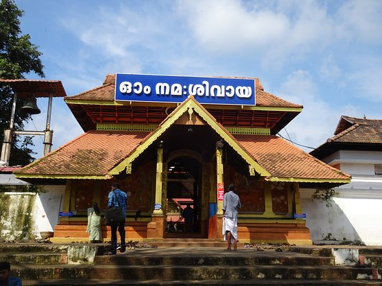
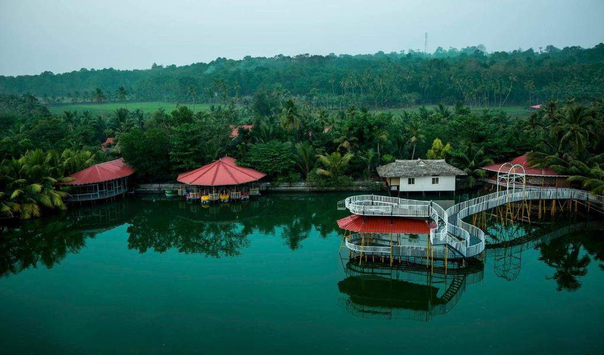

Illikkal Kalu
Illikkal Kallu is a Thalanadu located on top of the Illickal Malaa in the Kottayam district of Kerala, India.The distance from kottayam railway station to illikal kallu is 57km. Situated at around 3500 feet above sea level, Illickal Kallu is a major tourist attraction in Thalanadu.
Mahadevar Temple

The Thirunakkara Mahadevar Temple situated in the heart of Kottayam is one of the 108 revered Shivalayas in central Kerala, India. The temple is about 500 years old and was built by the Raja of Thekkumkur. It also preserves a number of unique sculptures and murals of various Hindu deities.
Mangomeadous

Mango Meadows is an agricultural theme park in Kaduthuruthy, Kerala, India. With more than 4800 species of plants, including 1900 species of medicinal plants, 700 species of trees, and 900 species of flowering plants, it is one of the most biodiverse places on earth.